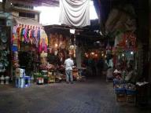
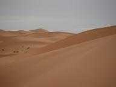
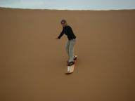
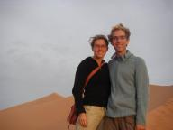
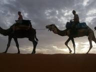
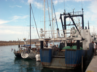
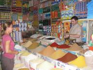
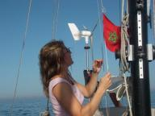
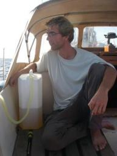
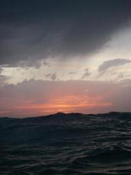

|


|
Weer onderweg
» exacte locatie
 Gistermiddag zijn we vertrokken uit het prachtige Marokko waar we in een week zoveel beleefd hebben. Na een hele heisa met paspoorten, Dingo kreeg hun paspoorten niet terug als wij die van ons niet nog even terug gaven voor de stempel, konden we de haven betalen. Eerst een papiertje hier, stukje lopen voor de paspoorten dan naar loketje daar om 15(!) euro liggeld voor de hele week te betalen en vervolgens met dat bewijs waren we weer vrij. We blijven ons erover verbazen hoe anders Marokko is. Na de Sahara hadden we een relaxte nachtbus terug naar Marrakech. Als de bus even stopt voor een pauze komt er vanalles binnen, van bedelaar tot lui die chocola verkopen. Voor je het weet is de bus stampvol dus kun je beter maar even een rondje gaan lopen tot de chauffeur gaat toeteren en gas geven ten teken van vertrek. Bij aankomst in Marrakech regende het maar gelukkig klaarde het in de loop van de dag op. We hebben gezworven door het labyrinth van kleine straatjes met overal winkeltjes met mooie spullen. Hier is het afdingen nog een groter spel dan in Safi, ze beginnen de prijs ongeveer 4 keer te hoog en als je het dan nog te duur vindt gewoon weglopen en bij een volgend kraampje opnieuw beginnen. Dat is handig, want dan weetje al bijna de 'bodemprijs'. Er is hier ook een enorm plein 'Jemaa el-Fna' heet het en is cultureel erfgoed vn Unesco. Het wemelt er van de slangenbezweerders en voor je het weet hangt er een om je nek. Lekker gegeten en toen met de bus weer terug naar de boot. Moet wel zeggen dat het heerlijk was weer rustig op de boot te zijn. Al die mannetjes die van alles van je willen en je willen helpen en daar weer wat voor willen hebben. Ca va? Where are you from? Joost had daar een beetje genoeg van en riep terug 'where are you from?' dat was wel lachen want dat vonden ze minder grappig. Ook hebben we veel Arabieren hun Nederlandse woordenschat laten uitbreiden met 'Nijmegen'. Wij hebben er ook een paar woorden bij geleerd. Hallo is 'sallammailicum', bedankt is 'sjokran' en 'zo als God het wil' is 'insjallah'. Dat laatste zeggen ze vaak bijv. als je iemand niks wilt geven of het afdingen niet lukt. Gister hebben we op de valreep nog ons accurekje laten aanpassen zodat de accu's er in passen. Samen hebben we een mooie tekening gemaakt en zijn we naar een staalwerfje gelopen. Die man stelde goede vragen en na wat onderhandelen over hoe laat het klaar moest zijn hadden we twee uur later voor 14 euro een perfect rekje! De oude accu's heeft Joost met 'de clown' weggebracht. 'De clown', zo noemen we het mannetje dat vaak bij onze boten rond loopt om te kijken of we hulp nodig hebben. Herkenbaar aan zijn rode pet. Vooral met Dingo is hij beste maatjes geworden na een pakje sigaretten. Die gaf Martin nadat hij 'm goed had geholpen. Hij is trouwens ook echt aardig en niet opdringerig, maar wat hij nou zo'n hele dag doet verder? We zijn nu op weg naar de Canarische eianden. Het eerste eiland, Lanzarote, is verder dan we dachten. Toch nog 280 mijl waarvan er nu nog 170 op de teller staan. Dat gaat de goede kant op en we zitten weer helemaal in het zeilritme na genieten van onze Marokko-avonturen.
Gistermiddag zijn we vertrokken uit het prachtige Marokko waar we in een week zoveel beleefd hebben. Na een hele heisa met paspoorten, Dingo kreeg hun paspoorten niet terug als wij die van ons niet nog even terug gaven voor de stempel, konden we de haven betalen. Eerst een papiertje hier, stukje lopen voor de paspoorten dan naar loketje daar om 15(!) euro liggeld voor de hele week te betalen en vervolgens met dat bewijs waren we weer vrij. We blijven ons erover verbazen hoe anders Marokko is. Na de Sahara hadden we een relaxte nachtbus terug naar Marrakech. Als de bus even stopt voor een pauze komt er vanalles binnen, van bedelaar tot lui die chocola verkopen. Voor je het weet is de bus stampvol dus kun je beter maar even een rondje gaan lopen tot de chauffeur gaat toeteren en gas geven ten teken van vertrek. Bij aankomst in Marrakech regende het maar gelukkig klaarde het in de loop van de dag op. We hebben gezworven door het labyrinth van kleine straatjes met overal winkeltjes met mooie spullen. Hier is het afdingen nog een groter spel dan in Safi, ze beginnen de prijs ongeveer 4 keer te hoog en als je het dan nog te duur vindt gewoon weglopen en bij een volgend kraampje opnieuw beginnen. Dat is handig, want dan weetje al bijna de 'bodemprijs'. Er is hier ook een enorm plein 'Jemaa el-Fna' heet het en is cultureel erfgoed vn Unesco. Het wemelt er van de slangenbezweerders en voor je het weet hangt er een om je nek. Lekker gegeten en toen met de bus weer terug naar de boot. Moet wel zeggen dat het heerlijk was weer rustig op de boot te zijn. Al die mannetjes die van alles van je willen en je willen helpen en daar weer wat voor willen hebben. Ca va? Where are you from? Joost had daar een beetje genoeg van en riep terug 'where are you from?' dat was wel lachen want dat vonden ze minder grappig. Ook hebben we veel Arabieren hun Nederlandse woordenschat laten uitbreiden met 'Nijmegen'. Wij hebben er ook een paar woorden bij geleerd. Hallo is 'sallammailicum', bedankt is 'sjokran' en 'zo als God het wil' is 'insjallah'. Dat laatste zeggen ze vaak bijv. als je iemand niks wilt geven of het afdingen niet lukt. Gister hebben we op de valreep nog ons accurekje laten aanpassen zodat de accu's er in passen. Samen hebben we een mooie tekening gemaakt en zijn we naar een staalwerfje gelopen. Die man stelde goede vragen en na wat onderhandelen over hoe laat het klaar moest zijn hadden we twee uur later voor 14 euro een perfect rekje! De oude accu's heeft Joost met 'de clown' weggebracht. 'De clown', zo noemen we het mannetje dat vaak bij onze boten rond loopt om te kijken of we hulp nodig hebben. Herkenbaar aan zijn rode pet. Vooral met Dingo is hij beste maatjes geworden na een pakje sigaretten. Die gaf Martin nadat hij 'm goed had geholpen. Hij is trouwens ook echt aardig en niet opdringerig, maar wat hij nou zo'n hele dag doet verder? We zijn nu op weg naar de Canarische eianden. Het eerste eiland, Lanzarote, is verder dan we dachten. Toch nog 280 mijl waarvan er nu nog 170 op de teller staan. Dat gaat de goede kant op en we zitten weer helemaal in het zeilritme na genieten van onze Marokko-avonturen.

|
|
|

Sahara
» exacte locatie
Ons oorspronkelijke plan was om met de bus naar Marrakech te gaan,
maar geleidelijk aan begonnen we het gevoel te krijgen dat we de
woestijn eigenlijk niet zouden moeten overslaan nu we er relatief in
de buurt zijn. Nouja, relatief, we praten wel over 600 km vanaf de
boot. Maar na het zien van de foto's van onze buren die er al geweest
waren hebben we besloten er ook heen te gaan. De eerste dag zijn we
tot Quarzazate gekomen. Op zich geen echt interessante stad, maar de
tocht er heen met de bus over de Atlas bergen was wel fraai. In
Quarzazate hebben we voor het eerst een gerecht in een tagine (zo'n
kegel voor op de barbecue) gegeten. Dat smaakte prima. En daarna
(kort) overnacht in een hotel, want de volgende dag om 5:00 zaten we
al weer in de bus. Het plan was om naar hetzelfde hotel bij de
woestijn te gaan als onze buren en van daaruit wandelingen te maken,
tot dat er een vriendelijk figuur bij ons in de bus stapte en hele
verhalen begon over dat het hotel waar we heen wilden slecht was
(fighting...), de woestijn daar minder mooi, minder hoog enzovoort.
Bij hem konden we gratis kijken, werden we gebracht met een 4x4 wagen,
bla bla bla bla. Maar, we trapten er toch in en uiteindelijk zijn we
met een kameel de woestijn ingetrokken en hebben overnacht in de
woestijn, buiten. De kameel had niet echt gehoeven, want in plaats van
dat je op een superluxe zadel zit bleek je eigenlijk bijna
rechtstreeks op de bulten te zitten wat niet heel lekker zat, maar de
rest van het uitstapje was wel erg leuk. De zandduinen waren prachtig,
precies zoals in de films... En we hebben nog aardig gepraat bij een
kampvuur 's avonds met onze gidsen en een paar andere toeristen die
ook mee waren. Wat ook leuk was was het sandboarden: met een snowboard
van zo'n duin afglijden! We hebben nog niet heel veel van Marokko
gezien eigenlijk, maar deze woestijn is wel een echte aanrader.
Vannacht gaan we met de bus terug naar Marrakech waar we morgen gaan
rondkijken en daarna maar weer eens naar de boot, want de Canarische
eilanden wachten op ons.




|
|
|
Safi
» exacte locatie
We zijn inmiddels een paar dagen in Safi. Als we de kant op gaan
klimmen we eerst over de grote vissersboot zonder vies te worden...Heb
dankzij de ossengalzeep al veel vlekken van ons en onze medezeilers
verwijderd. Maar hier is het eigenlijk heel hip om met vieze kleren te
lopen, dus eigenlijk is het niet zo erg. Met 'hier' bedoel ik vooral
de vissershaven waar we eerst langs lopen. Dan kom je bij de
douanepoort en omdat ik blond ben worden we bijna altijd gecontroleerd
;-). Ze vragen dan naar je 'short pass' omdat we de paspoorten af
moesten geven. Vanaf de poort loop je zo het stadje in. De medina is
het leukst. Allemaal kleine kraampjes. Aan concurrentie doen ze hier
blijkbaar niet. want alle schoenenkraampjes zijn bij elkaar, evenals
fruit, vlees (levende kippen), stof, enz. Hier in Safi maken en
beschilderen ze heel veel aardewerk, erg mooi. We hebben een hele
mooie fruitschaal gekocht in de potjesarea en het afdingspel goed
meegespeeld. Ons accuprobleem is ook opgelost (nou ja, bijna, we
moeten ze nog inbouwen). We hebben ontdekt dat ze hier goede accu's
nodig hebben om in de bergen tv te kunnen kijken! Na een paar dagen
zoeken hebben we mooie, waarschijnlijk gesubsidieerde, 'special made
for Africa' televiesie-accu's gevonden! Erg lachen. Joost had de
voltmeter meegenomen en een zaklamp om in de accu te kunnen kijken.
Mooie dikke platen, dus geen startaccu en opgeladen. We hebben ook ons
buitenboordmotortje laten maken hier (die gebruiken de kleine
visbootjes nl. ook) alleen was Joost dit keer niet zo goed aan het
afdingen. In de pilot stond dat het dagloon van een visser 3 euro is
en Joost heeft 60 euro (van de tachtig) betaald. Dus die man kan de
rest van de maand feesten maar daarvoor heeft het motortje wel een
complete servicebeurt gehad. Joost ging ook nog mee achter op de
brommer om bougies te kopen en die reed dus keihard door de drukke
medina heen. Dat kan hier gerwoon. Martin van de Dingo heeft ook zijn
nieuwe zeerelingpaaltje uit Nederland laten vermaken in een of ander
werfje hier, dus de schade van de 'ankerplekaanvaring' is nu
verholpen. Vanmorgen wilden we met de bus naar Marrakech gaan maar
Joost was niet zo lekker (diarree, hoofdpijn). Joost dacht nog, het
gaat wel, dus wij vroeg op en langs de politie om ons paspoort op te
halen. Daar moetsen we een uur op gaan wachten. In mijn beste Frans
uitgelegd dat we juist vroeg de bus willen nemen en dat ons was gezegd
dat we ze 24 uur per dag terug konden krijgen...Zucht, hielp allemaal
niks, zijn collega had de sleutel. Terug naar de boot voelde Joost
zich minder goed en hebben we alsnog uitgeslapen. Gelukkig voelt hij
zich al wat beter en gaan we morgen alsnog. Het mooie is dat ik nu wel
al de paspoorten heb!


|
|
|
We zijn in Marokko!
» exacte locatie
Ik zit nu in een Marokkaans internetcafé en het is hier zo anders!
Samen met Inka van een Duitse zeilboot ben ik hierheen gelopen. Beiden
blond dus dat viel wel op aan de blikken te merken... Heel veel mannen
lopen hier op straat en de paar vrouwen die hier lopen zijn gesluierd.
Je ziet veel oude auto's en mannen die karren voorttrekken. We liggen
met drie zeilboten aan een grote vissersboot die nooit weg gaat. Wij
liggen aan Dingo vast, die waren een halve dag eerder aangekomen. Dat
komt omdat ze een grotere boot hebben. De rest van de tocht is lekker
rustig geweest. We hebben toch nog veel kunnen zeilen ondanks een hele
dag gemotord te hebben. Joost heeft onderweg de brandstof aangevuld
m.b.v. een hevelpompje, ideaal op zee! Na twee dagen nauwelijks gegeten
te hebben door de zeeziekte heeft Joost gistermorgen een ei met ham en
kaas voor ons gebakken! Dat ging er wel in. Die avond was de deining
nog aardig (zie foto) maar die werd in de loop van de nacht steeds
minder. We merkten bij de vierde nacht op zee dat we echt in het ritme
komen van " 3 uur op, " 3 uur af. Dit was ook de langste oversteek tot nu
toe en we hebben er drie en een halve dag over gedaan. Vanmorgen heeft
Joost weer zo'n heerlijk ei gebakken en hebben we opgeruimd en
gedoucht in de kuip. Heerlijk om schoon aan te komen, we wisten al van
te voren dat er geen voorzieningen zouden zijn. We liggen aan de
Dingo, dan een Duitse boot, de Aldjerinya en die ligt weer aan een
grote vissersboot die nooit wegvaart. We lagen nog geen 10 seconden
en toen begon het circus... Eerst kwam de kustwacht (Hassan) die alles
van ons wilden weten. Die was erg vriendelijk en hij heeft mij eens
goed uitgelegd hoe het hier werkt in Marokko, "First the man and then
the women". Hij zei dat je in Marokko 4 vrouwen mag trouwen en dat wij
niet getrouwd waren dat kon toch eigenlijk niet. "You can arrange
marriage here in three days, invite your family and friends". Op onze
leeftijd is het normaal dat je hier zo'n 3, 4 kids hebt. Joost z'n
beroep 'software developement' zei hem niks maar mijn beroep 'teacher'
maakte erg veel indruk op hem. Dat vond ik wel grappig. Daarna kwamen
nog 3 mannetjes die vanalles wilden weten en de laatste vroeg om een
'present'. Daar hadden we al rekening mee gehouden, dat stond in de
pilot, maar toch een rare gewoonte. We hebben hem afgescheept met een
pakje sigaretten en een reep chocola voor zijn kids. Die Duitsers
hadden het beter voor ekaar... Ze hadden met die man gepraat over die
gewoonte en dat ze het gek vinden dat al die instanties kadootjes
willen. De volgende dag kwam hij met een kadootje voor hen (een
beschilderd potje, erg mooi) om ook een goede indruk van Marokko bij
hen achter te laten. Zij zijn duidelijk al langer in Marokko ;-). Safi
is een bedrijvig stadje en als het lukt gaan we binnenkort meer van
Marokko bekijken. Ik ben helemaal onder de indruk van zo'n andere
cultuur.



|
|
|

|

|
|
|